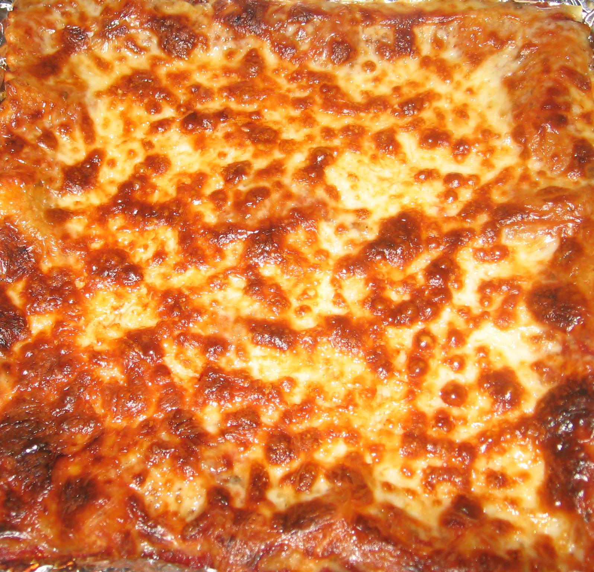

Lasagna

This classic lasagna recipe
This classic lasagna recipe layers rich, hearty meat sauce with creamy ricotta and gooey melted mozzarella
for a comforting, indulgent dish that's perfect for any occasion. The meat sauce, made with a combination of ground beef and Italian sausage,
is simmered to perfection with crushed tomatoes, tomato paste, and a blend of aromatic herbs. Each bite delivers a delightful medley of flavors, from the tangy tomato sauce to the savory meats and subtle hints of garlic and basil.
Ingredient list
- 1 pound ground beef
- 1 pound Italian sausage, casings removed
- 1 large onion, finely chopped
- 4 cloves garlic, minced
- 2 cans (28 ounces each) crushed tomatoes
- 2 cans (6 ounces each) tomato paste
- 1 can (15 ounces) tomato sauce
- 1/2 cup red wine (optional)
- 2 tablespoons sugar
- 1 tablespoon dried basil
- 1 teaspoon dried oregano
- 1/2 teaspoon salt
- 1/4 teaspoon black pepper
- 1/4 cup chopped fresh parsley
- 12 lasagna noodles
- 15 ounces ricotta cheese
- 1 egg, beaten
- 3 cups shredded mozzarella cheese
- 1 cup grated Parmesan cheese
Steps
- Preheat the oven to 375°F (190°C).
- In a large pot, cook the ground beef, Italian sausage, onion, and garlic over medium heat until well browned. Drain off excess fat.
- Stir in the crushed tomatoes, tomato paste, tomato sauce, and red wine. Add the sugar, basil, oregano, salt, and pepper. Simmer, covered, for about 30 minutes, stirring occasionally.
- In a large pot, cook the lasagna noodles according to the package instructions. Drain and rinse with cold water.
- In a mixing bowl, combine ricotta cheese, beaten egg, and fresh parsley. Mix well.
- Spread 1 cup of meat sauce in the bottom of a 9x13 inch baking dish. Arrange 6 noodles lengthwise over meat sauce. Spread with one half of the ricotta cheese mixture. Top with a third of the mozzarella cheese slices. Spoon 1 1/2 cups meat sauce over mozzarella, and sprinkle with 1/4 cup Parmesan cheese.
- Repeat layers, and top with remaining mozzarella and Parmesan cheese.
- Cover with foil to prevent sticking, either spray
Steps